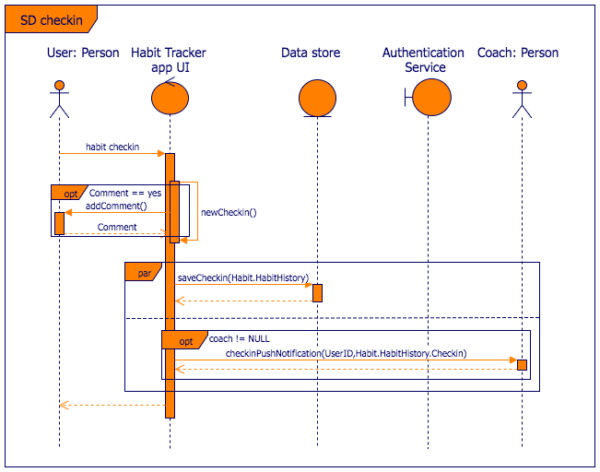

The Unified Modeling Language (UML) is a diagramming notation (language) that lets you visualize systems and software. It’s one of the most popular forms of diagramming in software development and became an ISO standard in 1997. Since then, there have been a few updates to add extra UML diagram types and to support new technologies in programming.
There are two main categories and 14 different types of UML diagrams, each of which is used in a different situation.
Use case diagrams in UML are used during the requirements phase of software development – they usually put the system requirements into a diagram format, and it’s easy to see what actions a system must support at a glance. Of course, there will be many use cases for your system, and therefore you will usually need to draw many use case diagrams!
Along with other UML diagrams, such as activity, sequence and component diagrams, use case diagrams help you to visualize your software and requirements, before jumping in and starting to program.
Object oriented programming languages are based on classes and the relationships between them. UML class diagram notation was developed to represent these programs visually.
Probably the most well known structural diagram are class diagrams, which specify the data structures and their relationships within your program.
Classes contain their attributes (their data) and behaviors (member functions), and are related to each other with a variety of connectors.
UML sequence diagrams are the first highly detailed behavioural diagrams that you will create when using UML for software development. They aren’t so often used in business process modelling, especially because they refer to the actual data and operation names that will be used when programming. That doesn’t mean you can’t use sequence diagrams: they can be used to model business objects and their interactions in detail, or by IT staff to detail how the elements in their infrastructure communicate and work together.
Like use case diagrams, activity diagrams model the behaviour of users and systems as they follow a process. They are a type of flow chart or workflow, but they use slightly different shapes.
The biggest difference between state diagrams and activity or interaction overview diagrams is that state diagrams do not (necessarily) show the sequence. They just show what states are possible and their entry and exit points, not when those states are entered.
State diagrams can be very complex – you can nest state diagrams, put guards (true/false) before a state, add actions triggered by a state change, and even defer events to be processed at a later time. These diagrams can get very text-heavy, and the conditions are usually written for one specific programming language. This may make the diagrams complex to look at, but it can also make programming (and testing) faster as there is less room for misunderstanding.
These UML diagrams are a combination of an activity diagram and sequence diagrams. Each individual activity or interaction is placed in its own frame, making it easier to see the different paths that need to be programmed when there are complex if-then-else decisions. Decisions are outside of the frames to show the flow of control between the various interactions.
The interactions themselves, inside the frames, are very similar to sequence diagrams. Between the interactions you will have decisions (diamonds) and fork and join nodes (solid horizontal rectangles), and connectors to show the flow of control. There are also initial and final nodes to show the start and end of the overarching interaction.
The notation used in UML communication diagrams is the same as is used in UML sequence diagrams, only much simpler: